468 — Sàng lọc ROP từ xa (tele-ROP) & trí tuệ nhân tạo / Tele-ROP screening & artificial intelligence
Tags: pattern:rop vung:vong-mac score:ICROP protocol:tele-ROP protocol:AI-sang-loc-ROP
Mức chắc chắn (certainty): tổng hợp y văn (literature synthesis) — nhóm tự biên từ y văn mở (Saudi J Ophthalmol 2022 CC BY-NC-SA; Eye Brain 2016 CC BY-NC; Sci Rep 2019 CC BY; JAMA Netw Open 2021 CC BY; J Ophthalmol 2021 CC BY; Diagnostics 2021 CC BY; Ophthalmol Sci 2022 CC BY-NC-ND; BMC Ophthalmol 2021 CC BY), chưa gắn một ca nguyên văn đơn lẻ.
1. Tổng quan — vì sao ROP phải "ra khỏi" phòng khám chuyên gia
- Bối cảnh (pathology – epidemiology): ROP vẫn là nguyên nhân mù có thể điều trị hàng đầu ở trẻ em. Khi hồi sức sơ sinh lan rộng ở nước thu nhập trung bình mà hạ tầng sàng lọc không theo kịp, xuất hiện "đại dịch ROP thứ ba" (Tan Z et al., Saudi J Ophthalmol 2022, PMC9583350). Nghịch lý vận hành: gánh nặng đọc ảnh rất lớn nhưng sản lượng điều trị rất thấp — chỉ khoảng 1–2% trẻ được sàng lọc cần điều trị (bài 456), nên "mỗi giờ bác sĩ chuyên gia" là tài nguyên khan hiếm nhất.
- Ba phương thức sàng lọc (Tan Z, PMC9583350): soi đáy mắt gián tiếp hai mắt (binocular indirect ophthalmoscopy — BIO); chụp ảnh võng mạc số góc rộng (wide-field digital retinal imaging — WFDRI); và sàng lọc từ xa (teleophthalmology / tele-ROP). BIO là "chuẩn vàng" nhưng có 3 hạn chế cấu trúc: (1) độ đồng thuận giữa người khám thấp (interoperator agreement), (2) khó mở rộng quy mô (scalability), (3) rào cản địa lý — đây chính là 3 khe hở mà ảnh số hóa + tele-ROP + AI lấp vào.
- TẠI SAO ảnh võng mạc trẻ non lại khó (cơ chế hình ảnh): võng mạc chưa mạch hóa hoàn toàn nằm ở ngoại vi cực trước xích đạo → muốn thấy ranh giới mạch/vô mạch phải có góc rộng thật; môi trường trong suốt thường đục nhẹ (mờ dịch kính, sương giác mạc do ấn đầu dò), đồng tử nhỏ, trẻ cử động → ảnh hay mờ, lệch sáng, cháy (glare). Bản thân đậm độ/tín hiệu không phải vấn đề (ảnh quang học màu), cái quyết định là độ phân giải ranh giới mạch–vô mạch và mức vằn xoắn mạch cực sau (plus disease).
- Ngưỡng định lượng nằm lòng:
- Tiêu chí sàng lọc: mọi trẻ tuổi thai ≤ 30 tuần VÀ/HOẶC cân nặng sinh ≤ 1500 g; mở rộng cho 30–32 tuần hoặc 1500–2000 g có yếu tố nguy cơ (hỗ trợ hô hấp, tim mạch…). Tiêu chí rất khác nhau giữa các quốc gia, dù cùng nhóm thu nhập thì thường giống nhau (Tan Z, PMC9583350).
- Chụp ảnh chuẩn: bộ 5–6 ảnh kinh điển (cực sau quanh đĩa thị + thái dương, mũi, trên, dưới + ảnh ngoài nhãn cầu) (Thanos A et al., Eye Brain 2016, PMC5398746).
- Điện thoại so với máy chuẩn: trường nhìn của chụp đáy mắt bằng điện thoại (smartphone-based fundus imaging — SBFI) chỉ bằng khoảng 1/2,5 (tỷ lệ đường kính 1:2,5) so với máy tiếp xúc, nhưng độ chi tiết tương đương, thời gian khám dài hơn (109,0 ± 57,8 giây so với 75,9 ± 36,3 giây, p < 0,01) (Wintergerst MWM et al., Sci Rep 2019, PMC6928229).
- Hiệu năng AI gộp (meta-analysis): 9 nghiên cứu / 15 bộ phân loại — độ nhạy gộp 0,953 (KTC 95% 0,946–0,959), độ đặc hiệu gộp 0,975 (0,973–0,977), AUC đường SROC 0,984 (0,978–0,989) (Zhang J et al., J Ophthalmol 2021, PMC8363465).
- Thang độ nặng mạch máu (vascular severity score — VSS): do AI gán từ 1 đến 9, tăng dần theo mức ICROP; VSS gắn chặt với plus disease và ROP cần điều trị (Cole E et al., Ophthalmol Sci 2022, PMC9754980).
2. Mẫu hình + chẩn đoán phân biệt theo "nút thắt" (gamut theo công suất)
Mẫu hình không phải "một tổn thương" mà là một chuỗi giá trị (workflow); DDx ở đây là chọn nút thắt nào để can thiệp.
- Nút thắt 1 — thiếu camera: xử lý bằng WFDRI giá rẻ hoặc SBFI (điện thoại + thấu kính Pan Retinal 2.2, không tiếp xúc). SBFI hy sinh trường nhìn để đổi lấy chi phí và tính di động (Wintergerst MWM, PMC6928229).
- Nút thắt 2 — thiếu chuyên gia đọc: xử lý bằng AI triage (lọc ảnh bình thường để chuyên gia chỉ đọc ca nghi ngờ) và bản đồ nhiệt giải thích (explainable AI) để tăng tin cậy (Wang J et al., JAMA Netw Open 2021, PMC8100867).
- Nút thắt 3 — thiếu mạng lưới tiếp cận: xử lý bằng nền tảng đặt hẹn/tư vấn qua điện thoại (ví dụ WeChat): trong đại dịch, tỷ lệ hoàn thành lịch hẹn trực tuyến 58,1% so với 22,1% đối với hẹn trực tiếp (p = 0,018) và số trẻ được sàng lọc năm 2020 (54 trẻ) không giảm so với 2019 (51 trẻ) (Guo Z et al., BMC Ophthalmol 2021, PMC8192130).
- Chuỗi tele-ROP điển hình (Tan Z, PMC9583350): xác định trẻ theo tiêu chí → chụp ảnh, đưa lên cơ sở dữ liệu chia sẻ → (nếu có) CBIA/AI sàng lọc ảnh → nghi ROP? → chuyên gia đọc → xác định ROP → xuất viện hoặc theo dõi tiếp.
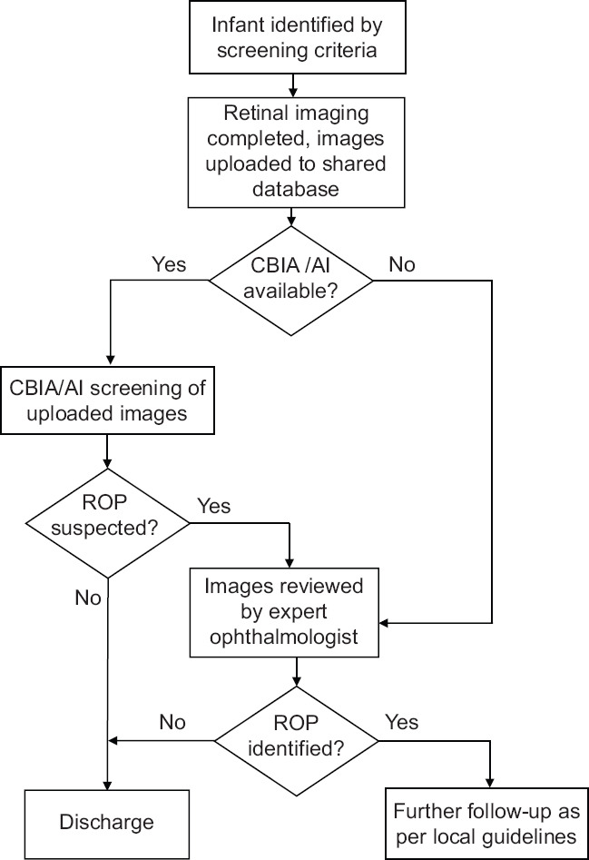
Sơ đồ luồng: trẻ đủ tiêu chí → ảnh đưa lên cơ sở dữ liệu chia sẻ → có CBIA/AI? → AI sàng lọc → nghi ROP? → chuyên gia đọc → xác định ROP? → xuất viện / theo dõi. Nguồn: Tan Z et al., Saudi J Ophthalmol 2022, PMC9583350 Fig. 5, CC BY-NC-SA 4.0 (giữ nguyên bản).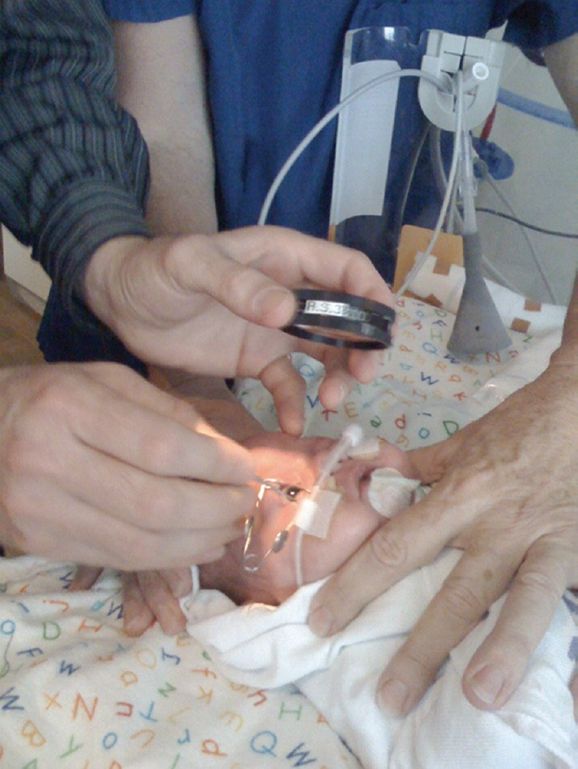
BIO với thấu kính cầm tay trên trẻ sơ sinh: mở van banh mi, đèn soi trực tiếp. Hạn chế: khó mở rộng, tốn chuyên gia. Nguồn: Tan Z et al., PMC9583350 Fig. 2, CC BY-NC-SA 4.0 (giữ nguyên bản).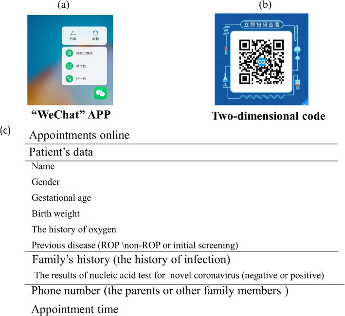
Giao diện ứng dụng đặt hẹn khám ROP trên điện thoại/máy tính bảng. Nguồn: Guo Z et al., BMC Ophthalmol 2021, PMC8192130 Fig. 1, CC BY 4.0.3. Bảng so sánh phân biệt (ma trận đối chiếu)
| Phương thức (entity) | Hình ảnh/đầu ra điển hình | Chốt vào (rule-in) | Chốt loại (rule-out) | Gợi ý xác nhận |
|---|---|---|---|---|
| Soi đáy mắt gián tiếp (BIO) | Quan sát động, không có ảnh lưu | Bất kỳ mức non nào + cần đánh giá động/3D tại giường | Không thể lưu ảnh để hội chẩn từ xa → khó audit | Chuẩn vàng; nhưng đồng thuận giữa người khám thấp |
| Chụp số góc rộng (WFDRI: RetCam, 3nethra) | Ảnh màu góc rộng nhiều ô, thấy tới ngoại vi | Ảnh góc rộng thấy ranh giới mạch/vô mạch + vằn mạch cực sau | Trường nhìn hẹp/ảnh mờ không tới ngoại vi → không loại trừ được ROP ngoại vi | So khớp ảnh ICROP; lưu trữ + hội chẩn từ xa |
| Chụp đáy mắt bằng điện thoại (SBFI) | Ảnh tròn nhỏ, trường nhìn ~1/2,5 máy chuẩn | Nguồn lực thấp + cần cơ động; đồng thuận plus κ 0,88, giai đoạn κ 0,81 | Trường nhìn nhỏ → dễ bỏ sót tổn thương ngoại vi (zone II–III xa) | So với CFI: Se/Sp plus 90%/100%, ROP 88%/93% |
| AI triage (học sâu) | Điểm số/VSS 1–9 + bản đồ nhiệt | AUC 0,98–0,999 cho plus/ROP → lọc ca bình thường | Dịch chuyển miền (domain shift) khi đổi máy/chủng tộc → âm tính giả | Đọc lại bởi chuyên gia khi AI dương/không chắc |
| Tele-ROP lai (AI + chuyên gia) | Chuỗi workflow có nhánh AI | Nghi ROP → chuyển chuyên gia → theo dõi/xuất viện | AI âm nhưng ảnh chất lượng kém → không được xuất viện | Cơ sở dữ liệu chia sẻ + lịch theo dõi theo guideline địa phương |
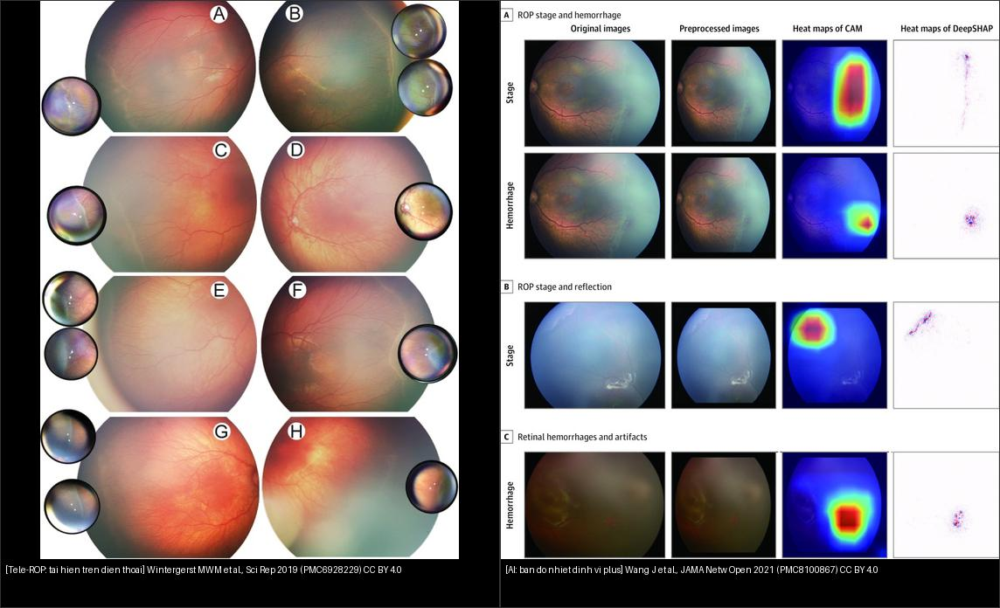
Trái: tái hiện ROP bằng điện thoại (ảnh lớn = máy chuẩn, ảnh nhỏ = SBFI). Phải: bản đồ nhiệt AI (CAM/DeepSHAP) định vị vùng quyết định "giai đoạn" và "xuất huyết". Nguồn: Wintergerst MWM et al., Sci Rep 2019 (PMC6928229) CC BY 4.0 + Wang J et al., JAMA Netw Open 2021 (PMC8100867) CC BY 4.0. Ảnh ghép letterbox, giữ nguyên bản.Bảng phụ — hiệu năng định lượng của các hệ AI (để so sánh "chốt" bằng số)
| Hệ thống | Nguồn | Đầu ra | Độ nhạy / độ đặc hiệu / AUC |
|---|---|---|---|
| i-ROP DL (VSS 1–9) | Cole E, PMC9754980 | plus disease; VSS | AUC 0,999 (Nepal) / 0,968 (Mongolia) |
| Nền tảng đa chiều 4 bộ phân loại | Wang J, PMC8100867 | stage, xuất huyết, pre-plus/plus, RW-ROP | AUC 0,983–0,998; hệ chuyển tuyến AUC 0,9901–0,9956 |
| Gộp 9 nghiên cứu / 15 bộ phân loại | Zhang J, PMC8363465 | phân loại + phân độ | Se gộp 0,953; Sp gộp 0,975; SROC AUC 0,984 |
| DIAROP (ResNet+Inception+FWHT) | Attallah O, PMC8620568 | bệnh / không bệnh | độ chính xác 93,2%; AUC 0,98 |
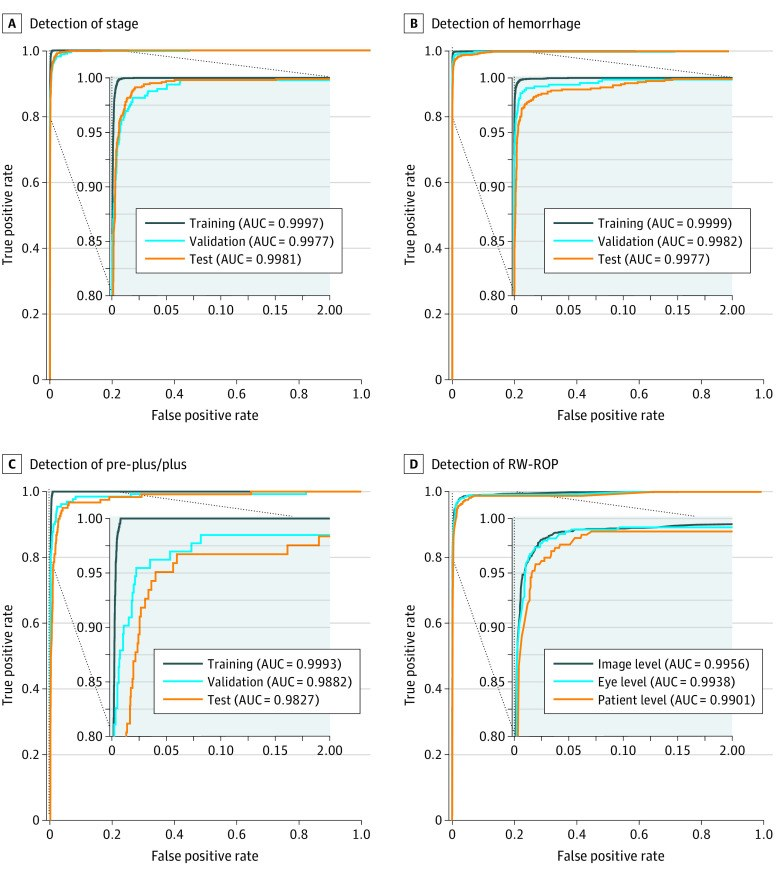
Bốn bộ phân loại độc lập: (A) giai đoạn, (B) xuất huyết, (C) pre-plus/plus, (D) ROP cần chuyển tuyến (RW-ROP). AUC huấn luyện/kiểm định/kiểm tra đều ~0,98–0,999. Nguồn: Wang J et al., JAMA Netw Open 2021, PMC8100867 Fig. 1, CC BY 4.0.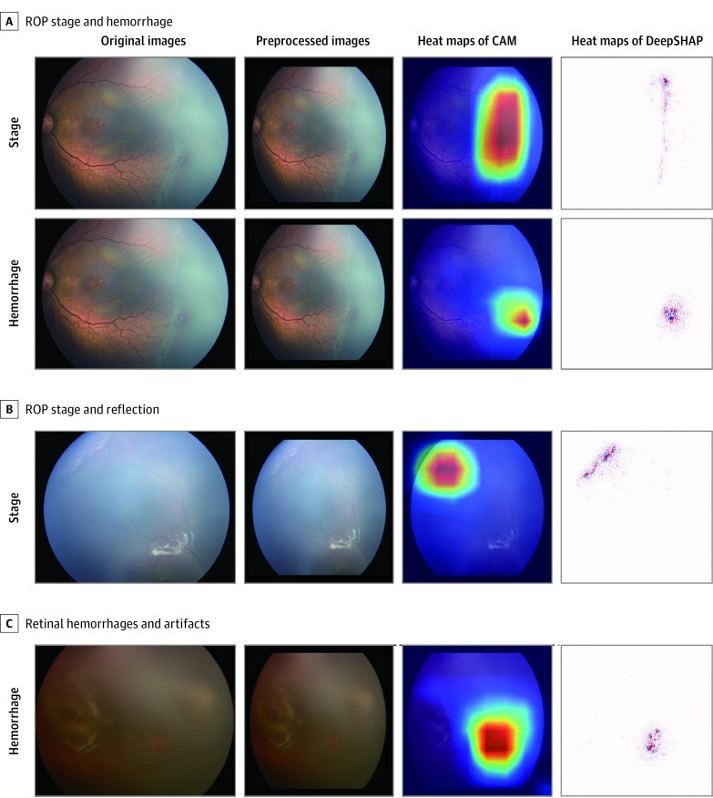
CAM/DeepSHAP: vùng đỏ = nơi AI dựa vào để quyết định (gờ tăng sinh, xuất huyết, phản xạ giả). Nguồn: Wang J et al., PMC8100867 Fig. 2, CC BY 4.0.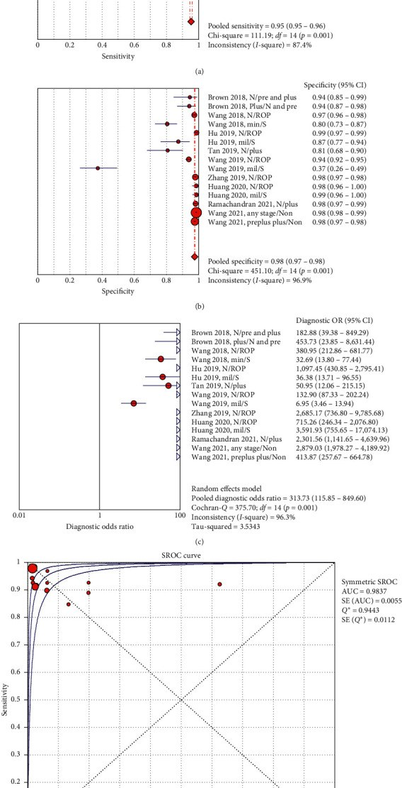
Forest plot: độ nhạy gộp 0,95; độ đặc hiệu gộp 0,98; DOR gộp 313,73; SROC AUC 0,984. Nguồn: Zhang J et al., J Ophthalmol 2021, PMC8363465 Fig. 2, CC BY 4.0.4. Protocol chụp + hệ phân độ/điểm chuẩn hóa
- Chuẩn bị: giãn đồng tử (cyclopentolate 0,2% ± phenylephrine 1%), không ấn nhãn cầu, ghi lại PMA tại thời điểm chụp (vì tổn thương đổi theo tuần).
- Chụp: bộ 5–6 ảnh — ngoài nhãn cầu + cực sau quanh đĩa thị + thái dương + mũi + trên + dưới (Thanos A, PMC5398746).
- Kiểm tra chất lượng ảnh + xác định vùng (zone) tự động: phần mềm cho phép Zoom/Pan/Brightness/Contrast/Saturation/Text và công cụ "Draw Zone 1" vẽ vòng zone I quanh đĩa thị (Thanos A, PMC5398746). Zone I lấy 2 khoảng đĩa–hoàng điểm.
- Đọc và mã hóa: nhập trực tiếp giãn đồng tử? rubeosis? tình trạng mạch (Normal/Pre-Plus/Plus); giai đoạn cao nhất (S1–S4/5); zone thấp nhất (1/2/3); phần mềm tự gợi ý lịch theo dõi tiếp (Thanos A, PMC5398746).
- AI/PROTOCOL hiện đại: (1) bộ phân loại chất lượng ảnh loại ảnh mờ trước; (2) các bộ phân loại giai đoạn, xuất huyết, pre-plus/plus, RW-ROP; (3) VSS 1–9 để theo dõi tiến triển/đáp ứng điều trị; (4) bản đồ nhiệt giải thích để chuyên gia kiểm tra lại (Wang J, PMC8100867; Cole E, PMC9754980).
- Ngưỡng hành động (giữ nguyên từ bài 456): Type 1 (ETROP) — zone I bất kỳ giai đoạn có plus; zone I stage 3; zone II stage 2–3 có plus → điều trị trong 48–72 giờ. AP-ROP điều trị cấp cứu, không chờ phân giai đoạn.
flowchart TD
A[Trẻ đủ tiêu chí sàng lọc<br/>≤ 30 tuần và/hoặc ≤ 1500 g] --> B[Giãn đồng tử + chụp 5-6 ảnh<br/>WFDRI hoặc SBFI]
B --> C{Bộ phân loại chất lượng ảnh<br/>đạt ngưỡng?}
C -->|Không - ảnh mờ| B
C -->|Có| D[AI triage:<br/>stage / hemorrhage / plus / RW-ROP<br/>+ gán VSS 1-9]
D --> E{AI nghi ROP<br/>hoặc VSS tăng?}
E -->|Không| F[Chuyên gia xác nhận bình thường<br/>-> xuất viện, theo lịch]
E -->|Có| G[Chuyên gia đọc ảnh<br/>đối chiếu bản đồ nhiệt]
G --> H{ROP xác định?}
H -->|Không| F
H -->|Có - Type 1 / AP-ROP| I[Điều trị trong 48-72 giờ]
H -->|Có - không Type 1| J[Theo dõi theo ICROP<br/>zone I: 1 tuần, zone II-III: 1-2 tuần]
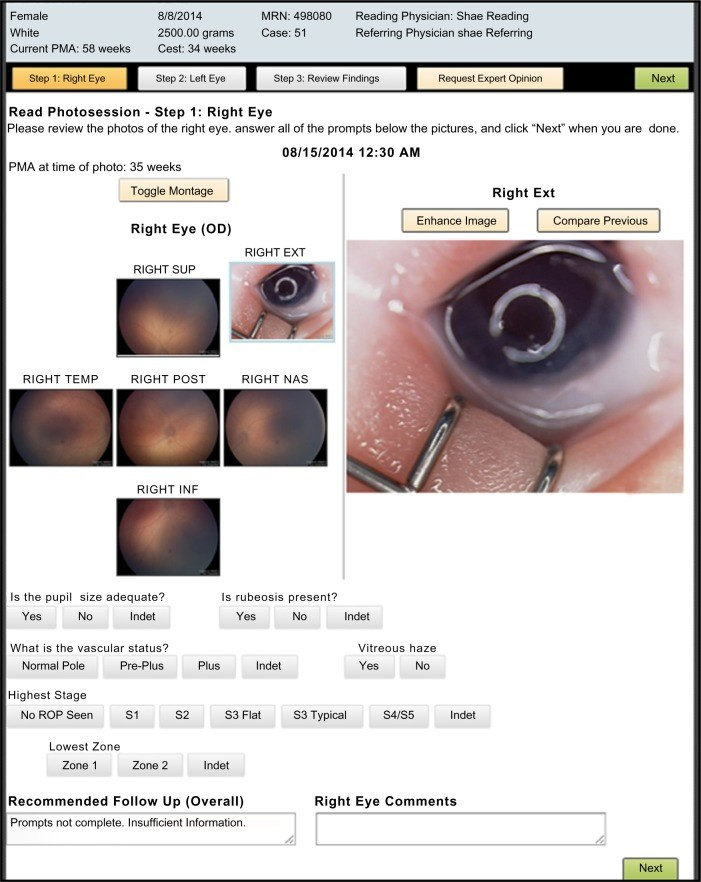
Trường nhập liệu chuẩn hóa: montage mắt phải (SUP/TEMP/POST/NAS/INF + ảnh ngoài), trạng thái mạch Normal/Pre-Plus/Plus, giai đoạn cao nhất S1–S4/5, zone thấp nhất 1/2/3, gợi ý theo dõi. Nguồn: Thanos A et al., Eye Brain 2016, PMC5398746 Fig. 1, CC BY-NC 3.0 (giữ nguyên bản).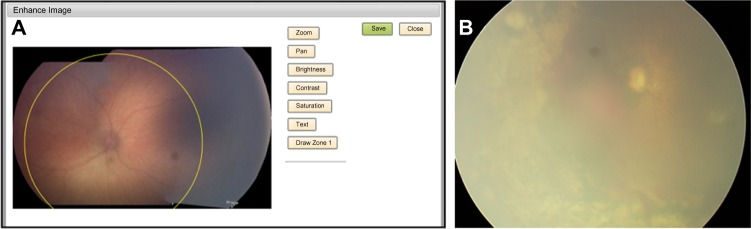
(A) Công cụ "Draw Zone 1" vẽ vòng zone I quanh đĩa thị trên ảnh cực sau. (B) Ảnh ngoại vi mờ — minh họa vì sao cần kiểm tra chất lượng trước khi kết luận. Nguồn: Thanos A et al., PMC5398746 Fig. 2, CC BY-NC 3.0 (giữ nguyên bản).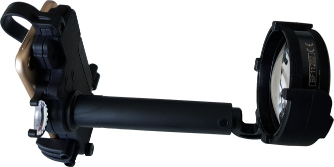
Điện thoại + thấu kính Pan Retinal 2.2, chụp gián tiếp không tiếp xúc — phương án chi phí thấp cho nơi thiếu máy. Nguồn: Wintergerst MWM et al., Sci Rep 2019, PMC6928229 Fig. 1, CC BY 4.0.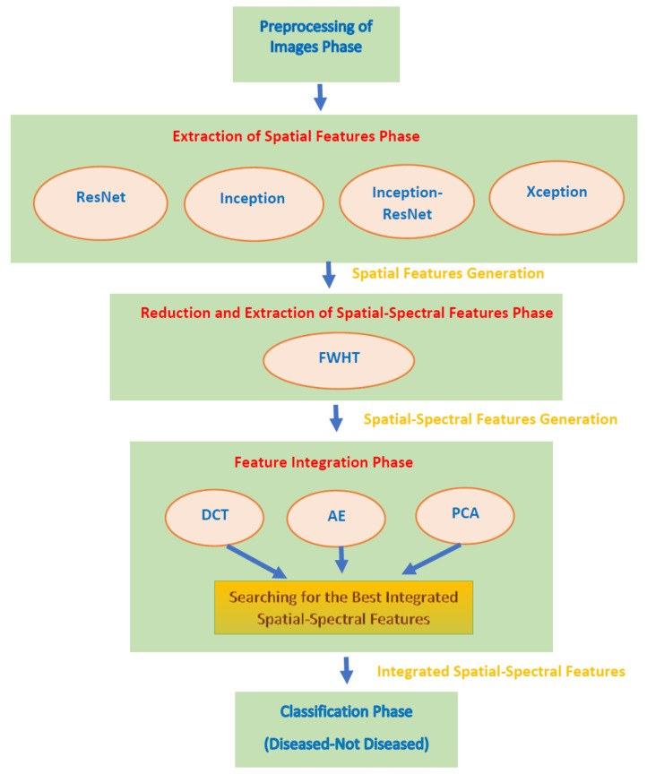
Tiền xử lý → trích đặc trưng không gian (ResNet/Inception/Inception-ResNet/Xception) → biến đổi Walsh-Hadamard → tích hợp đặc trưng (DCT/AE/PCA) → phân loại bệnh/không bệnh. Nguồn: Attallah O, Diagnostics 2021, PMC8620568 Fig. 2, CC BY 4.0.5. Biến thể bình thường và cạm bẫy
- Ảnh kém chất lượng "núp bóng" âm tính giả (cạm bẫy số 1): đồng tử chưa giãn, mờ dịch kính, phản xạ giả, lệch sáng → AI có thể "bình thường hóa". Luôn chạy bộ phân loại chất lượng ảnh trước; ảnh không đạt thì chụp lại, không được xuất viện.
- Dịch chuyển miền (domain shift): AI huấn luyện trên máy này (RetCam) có thể giảm hiệu năng trên máy khác (3nethra) hoặc dân số khác — Cole E (PMC9754980) phải kiểm định trên 2 máy + 2 quốc gia mới dám dùng. Không bê nguyên ngưỡng của bài gốc sang máy của mình.
- Trường nhìn nhỏ của điện thoại: SBFI chỉ bằng ~1/2,5 đường kính máy chuẩn → dễ bỏ sót tổn thương ngoại vi (zone II–III xa); phải chấp nhận là công cụ bổ trợ/cơ động, không thay thế hoàn toàn WFDRI.
- "Satisfaction of search": thấy một tổn thương (ví dụ xuất huyết) rồi ngừng tìm plus/zone ngoại vi — đọc hệ thống theo từng ô ảnh.
- Phụ thuộc quá mức vào AI (automation bias): đặc biệt khi ảnh xấu; giữ nguyên tắc AI âm nhưng ảnh kém = chưa kết luận.
- Phản xạ giả (artifact): mép thấu kính, bọng khí, phản chiếu đèn → giả "gờ/tân mạch" (xem hàng "artifacts" trong bản đồ nhiệt, PMC8100867 Fig. 2).
- Cạm bẫy trách nhiệm: tele-ROP vẫn cần bác sĩ chịu trách nhiệm pháp lý cuối cùng; ảnh lưu trữ phải đủ để truy vết (audit).
6. Tự lượng giá — Blind Quiz
Ca 1 — Quy trình tele-ROP trong một mạng lưới có AI: bước nào quyết định "xuất viện"?
- Bối cảnh: nơi chưa có đủ bác sĩ chuyên khoa muốn dùng AI để lọc trước.
- Câu hỏi: AI nằm ở bước nào? Nếu AI "không nghi ROP" thì có được xuất viện ngay không? Hai nhánh "ROP nghi ngờ" và "ROP xác định" khác nhau ra sao?
Bấm để hiện đáp án (findings + chẩn đoán)
- Luồng: trẻ đủ tiêu chí → chụp ảnh, đưa lên cơ sở dữ liệu chia sẻ → hỏi "CBIA/AI có sẵn?" → nếu có, AI sàng lọc ảnh → "ROP nghi ngờ?" → nếu nghi, chuyển chuyên gia đọc → "ROP xác định?" → nếu không, xuất viện; nếu có, theo dõi theo guideline địa phương.
- AI là bước triage, KHÔNG phải người kết luận: nhánh "No" ở "ROP nghi ngờ?" đi thẳng xuống Discharge chỉ khi ảnh đạt chất lượng; trên thực tế vẫn giữ ngưỡng an toàn (ảnh kém → không xuất viện).
- Chẩn đoán: đây là sơ đồ tele-ROP lai (AI + chuyên gia) — mấu chốt là AI giảm tải cho chuyên gia, không thay thế.
- Nguồn: Tan Z et al., Saudi J Ophthalmol 2022, PMC9583350 Fig. 5, CC BY-NC-SA 4.0 (giữ nguyên bản).
Ca 2 — Giao diện đọc ảnh: dấu hiệu nào bắt buộc nhập trước khi quyết định lịch theo dõi?
- Bối cảnh: một mạng lưới mới, cần chuẩn hóa dữ liệu đọc ảnh.
- Câu hỏi: Kể tên các trường nhập liệu chính? Vì sao phải nhập cả zone thấp nhất lẫn giai đoạn cao nhất?
Bấm để hiện đáp án (findings + chẩn đoán)
- Trường nhập: đồng tử đủ giãn? rubeosis? tình trạng mạch (Normal/Pre-Plus/Plus); giai đoạn cao nhất (No ROP/S1/S2/S3 Flat/S3 Typical/S4–S5/Indet); zone thấp nhất (1/2/3); ghi chú và lịch theo dõi gợi ý.
- Vì sao cả hai: zone quyết định tiên lượng/ngưỡng điều trị, giai đoạn quyết định mức tăng sinh; một ca có thể stage 3 ở zone II (Type 1 nếu có plus) nhưng cũng có stage 1 ở zone I (nguy hiểm vì zone I). Thiếu một trong hai → quyết định sai.
- Chẩn đoán: montage mắt phải (SUP/TEMP/POST/NAS/INF + ảnh ngoài nhãn cầu) theo bộ 5–6 ảnh chuẩn.
- Nguồn: Thanos A et al., Eye Brain 2016, PMC5398746 Fig. 1, CC BY-NC 3.0 (giữ nguyên bản).
Ca 3 — AI gán điểm: đọc ROC và VSS để quyết định ngưỡng
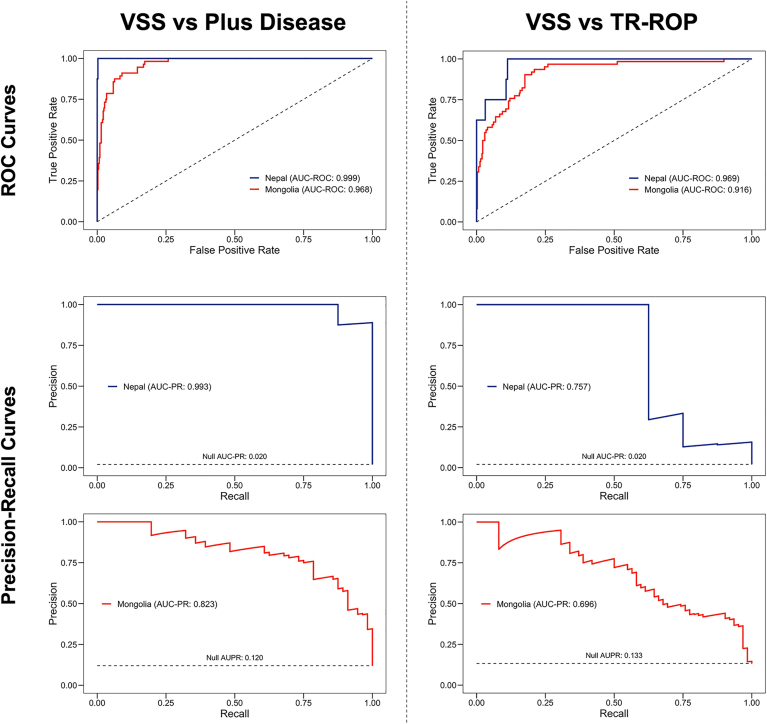
- Bối cảnh: đánh giá một hệ AI đã huấn luyện trên máy RetCam, giờ dùng ở nơi khác máy.
- Câu hỏi: VSS phân biệt plus disease tốt đến đâu? Vì sao phải xem cả ROC lẫn đường precision-recall?
Bấm để hiện đáp án (findings + chẩn đoán)
- Kết quả: VSS đối chiếu plus disease — AUC 0,999 (Nepal) và 0,968 (Mongolia); đối chiếu TR-ROP — AUC 0,969 và 0,916. Đường precision-recall cần thiết vì bệnh hiếm (type 1 ROP: Mongolia 14,0% vs Nepal 2,2%) khiến ROC "đẹp" dễ gây ảo giác.
- Điểm chốt (clincher): VSS 1–9 tăng đơn điệu theo mức ICROP → dùng để phát hiện tiến triển/tái hoạt, không chỉ phân loại nhị phân.
- Chẩn đoán: hệ i-ROP DL, kiểm định đa trung tâm/đa máy — bằng chứng cho việc dùng AI ở nơi thu nhập thấp–trung bình (Nepal dùng máy 3nethra, Mongolia dùng RetCam).
- Nguồn: Cole E et al., Ophthalmol Sci 2022, PMC9754980 Fig. 1, CC BY-NC-ND 4.0 (giữ nguyên bản, không ghép).
Ca 4 — Nhìn vào "trí tuệ" của AI: bản đồ nhiệt có tin được không?
- Bối cảnh: muốn biết AI ra quyết định dựa trên dấu hiệu bệnh hay trên nhiễu/ảnh giả.
- Câu hỏi: Ở hàng "Stage" và "Hemorrhage", vùng đỏ nằm ở đâu? Ở hàng có phản xạ giả (reflection), AI có bị "lừa" không?
Bấm để hiện đáp án (findings + chẩn đoán)
- Hàng Stage: vùng đỏ tập trung ở gờ tăng sinh/ranh giới mạch–vô mạch. Hàng Hemorrhage: vùng đỏ ở ổ xuất huyết. Hàng phản xạ/artifact: vùng đỏ dồn vào đốm sáng giả, cảnh báo AI có thể bám vào nhiễu nếu ảnh cháy sáng.
- Ý nghĩa: bản đồ nhiệt (CAM/DeepSHAP) giúp chuyên gia kiểm tra AI có dựa vào dấu hiệu bệnh thật không → đây là cơ sở của explainable AI.
- Chẩn đoán: nền tảng đa chiều 4 bộ phân loại (stage/xuất huyết/pre-plus-plus/RW-ROP), AUC 0,983–0,998.
- Nguồn: Wang J et al., JAMA Netw Open 2021, PMC8100867 Fig. 2, CC BY 4.0.
Bài liên quan chéo
- 456 – Bệnh võng mạc trẻ sinh non (ROP): zone–stage–plus & AP-ROP
- 457 – Bệnh "giả ROP" ở trẻ đủ tháng (FEVR, Norrie, IP, Coats)
- 458 – Di chứng & theo dõi dài hạn sau ROP
- 461 – Chọn thuốc & phác đồ anti-VEGF cho ROP
- 469 – Xử trí lác & nhược thị ở trẻ sinh non/ROP
- 401 – Phương thức chẩn đoán hình ảnh mắt
Ảnh
- Tên file
468_tele-rop_<nội dung>_<Tạp chí>-<Năm>-Fig<k>-<giấy phép>.jpg; nguồn + giấy phép từng ảnh trongimages/CREDITS.md. - Ảnh CC BY-NC / CC BY-NC-ND / CC BY-NC-SA giữ nguyên bản (không crop, không ghép). Chỉ ảnh CC BY được dùng để tạo ảnh ghép (
composite_468_tele-rop-vs-AI.jpg, letterbox giữ nguyên tỷ lệ).
Không dùng để chẩn đoán độc lập khi chưa có người hướng dẫn.